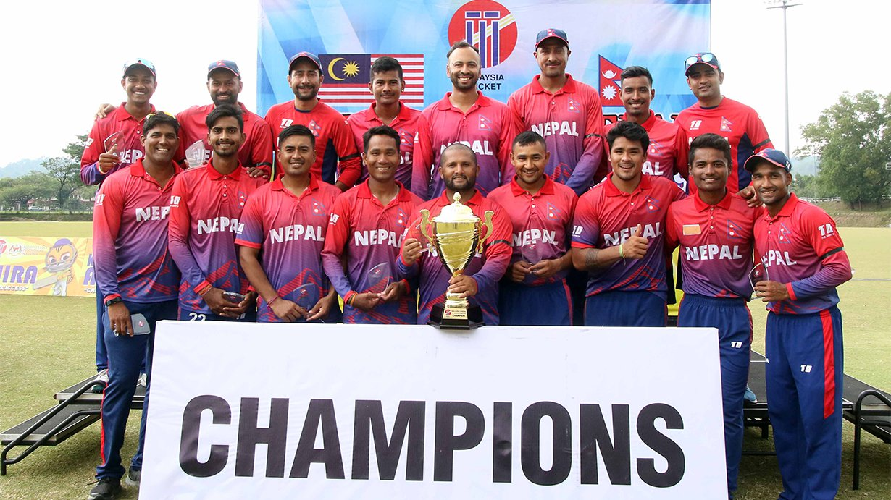
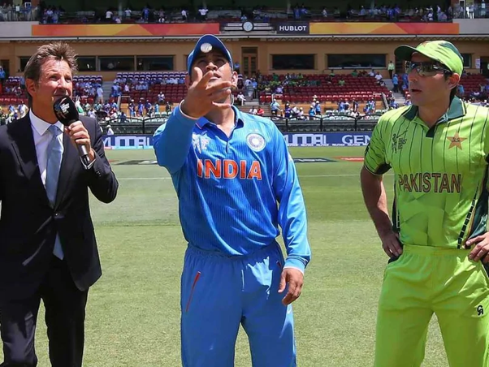

The most popular game in World.
You can watch this great game day and night!
Like every other sport, cricket has rules and
regulations that one must follow to play the gentleman's game.
The popularity of the sport has increased over the years
and many countries like Nepal and the UAE are preparing to
venture into international competition. Television ratings
and stadium attendance have been increasing and advertisers
are willing to heavily invest in cricket.Many people play
just for fun, while many others dream of becoming professionals.
Whatever your reason is, knowing all the rules and regulations will
help make you a better player.
Generally, the rules apply to
all the formats with the exception
of an exclusive rule or two for each one. Essentially, the game
of cricket involves two teams who attempt to score runs. The team
with the most runs is the winner.
Cricket Game Setup:
International cricket matches have eleven players on each team.
The game can also be played with fewer players, say about six on
a team, with prior agreement from both teams.

Umpires
Cricket umpires are responsible for making decisions and calls in a game of cricket.
They also ensure that players and matches follow the rules of the game, taking a
similar role to referees in other sports. Most umpires, at least at a professional
level, are male, even in women's cricket, and there was only one female umpire at
the Women's Cricket World Cup in 2013. The number of umpires on the field varies
according to the type of match played.Traditionally, cricket matches have two umpires
on the field, one standing at the end where the bowler delivers the ball (Bowler's end)
, and one directly opposite the facing batsman (usually, but not always, at square leg)
. However, in the modern game, there may be more than two umpires; for example Test
Matches have four: two on-field umpires, a third umpire who has access to video replays,
and a fourth umpire who looks after the match balls and takes out the drinks for the on-field umpires.
Toss
In cricket, the toss is the flipping of a coin to determine which captain will have the right to
choose whether their team will bat or field at the start of the match.
Before play begins, the captain of each side will inspect the pitch. Based on the pitch and
weather conditions, the captains select their final eleven players. If the pitch is soft or
dusty, the captain will tend to select more spin bowlers; if the pitch is hard, the choice
tends to favor fast bowlers at the expense of spinners.

Bowling
Each bowl is known as a delivery and bowlers attempt deliveries in sets of six,
which makes up an. When a player has completed their over, a new bowler replaces
the player and bowls their set of six balls from the opposite end of the pitch.
In limited overs one-day cricket such as the popular 20, 40, and 50 overs versions,
a bowler is limited to only 20% of the total overs. However, in first class or Test
match cricket, which is the longest form of the sport lasting up to five days, no
such bowling limits exist but the rule, which states that a bowler cannot bowl
consecutive overs, still applies.
In cricket, bowling a ball well requires great skill and technique as it requires
a specific biomechanical action, where the elbow joint of the throwing arm must not
straighten out more than 15 degrees during the bowling action. Bowlers are required
to hold their elbows fully extended and rotate the arm vertically about the shoulder
joint, releasing the ball near the top of the arc.
Breaking down the bowling action: A step-by-step guide
1. Run-up
2. Pre-delivery stride
3. Mid bound
4. Back foot contact
5. Front foot contact
6. Ball release
7. Follow Through
Watch this video to know more about bowling:
Batting
In cricket, batting is the act or skill of hitting the ball with a bat to score runs and prevent
the loss of one's wicket. Any player who is currently batting is denoted as a batsman, batswoman,
or batter, regardless of whether batting is their particular area of expertise. Batting players
have to adapt to various conditions when playing on different cricket pitches, especially in
different countries - therefore, as well as having outstanding physical batting skills, top-level
batters will have lightning reflexes, excellent decision-making and be good strategists. Four: Four runs are awarded to the batting team if the ball touches or passes
the boundary rope of the ground. Six: Six runs are awarded to the batting team if the ball passes the boundary rope
of the ground without bouncing
Cricket Pitch
The cricket pitch is the field where the game is played. The pitch is 22 yards long and 3 meters wide.
The middle of the pitch is a protected area where the bowler must avoid running.
This is because running on the protected area will damage the pitch area where the ball
bounces, making it difficult to bat. A bowler is given two warnings for running. Afterward,
he is refrained from bowling any further in the innings.
Some interesting facts about cricket
Cricket is played by more than 120 million players in many countries
which makes it the world’s second most popular sport.
It was first played in England in the 16th century.
As the British Empire expanded, cricket was introduced to more countries.
By the mid 1850s, international games were being played.
Cricket is most popular in England, Australia, India, South Africa,
the West Indies, New Zealand, Pakistan, and Sri Lanka.
Recently countries such as Bangladesh, Zimbabwe, Kenya,
Ireland, Afghanistan, Netherlands, and Nepal have become more
successful as the sport becomes more popular. Click in the botton to know maore intresting facts about Cricket.
All Copyright is clamed by the admister of this website.